3D models from code
44 ready-made models for Godot 4.
A coding agent can build every model on this page with one command, change its size and parts, look at it as text, and check it: clean .glb files with UVs, tangents, a node per moving part and the pivots Godot scripts expect. No Blender, no art tool, the same bytes every time.

Real renders of the default model of each kind, with a simple three.js viewer. They are clean base models, meant to be refined, not hand-sculpted art.
How an agent builds a model
- Identify.
godotwright model identify "a tractor"says what a thing is: its parts, typical size, variants, pivots and what to anticipate. English or Dutch, typos and descriptions work. - Build.
godotwright model build car --set width=1.9 -o car.glbfrom a ready-made kind, or from your own JSON spec of named parts. - View.
godotwright model view car.glbdraws front, side and top views as text, with a table of the parts, for agents that cannot see a picture. - Check.
godotwright model lint car.glb --archetype carscores geometry, materials and performance, and checks it is what it should be: required parts, pivots, wheel axes, size, direction.
Vehicles
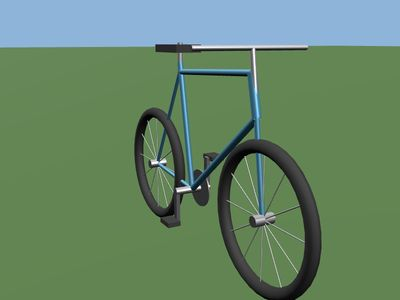
Bicycle
A city bicycle: a diamond frame of round tubes, a steering fork with handlebar that carries the front wheel, a rear wheel with spokes, a saddle and a crank with pedals.
npx -y godotwright model build bicycle -o bicycle.glb
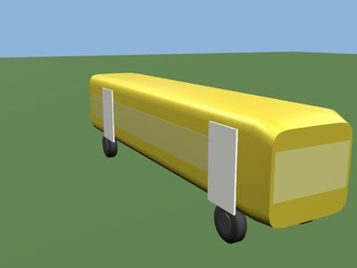
Bus
A city bus: a long body with window bands and windscreen, two passenger doors on the right-hand side hinged at their front edge, and two axles.
npx -y godotwright model build bus -o bus.glb
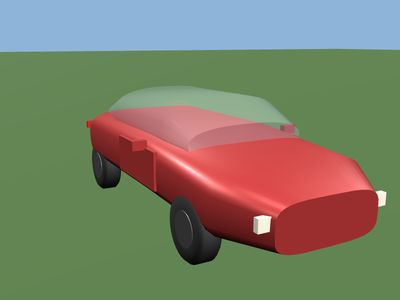
Car
A passenger car: a lofted body, a glass cabin, four wheels with their pivot at the hub, doors on their hinges, lights and mirrors.
npx -y godotwright model build car -o car.glb
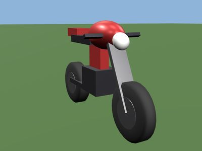
Motorcycle
A motorcycle: a frame with tank, seat and engine, a rear wheel on a swingarm, and a fork that steers about a raked axis and carries the front wheel and handlebar.
npx -y godotwright model build motorcycle -o motorcycle.glb
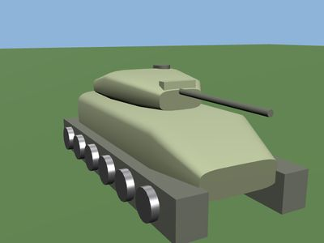
Tank
A main battle tank: a sloped hull, two track units with a row of road wheels each, and a turret on the vertical turret-ring axis that carries a gun hinged at its trunnion.
npx -y godotwright model build tank -o tank.glb
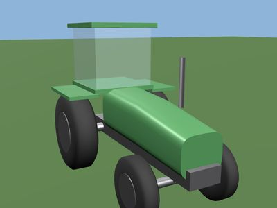
Tractor
A farm tractor: hood, cab, big rear and small front wheels with their pivot at the hub, fenders, exhaust and a hitch on its hinge.
npx -y godotwright model build tractor -o tractor.glb
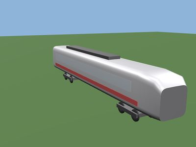
Train
A single railcar or locomotive-style coach: a streamlined body with window band and windscreen, two bogies that can pivot under the body, and wheels on standard gauge (1.435 m).
npx -y godotwright model build train -o train.glb
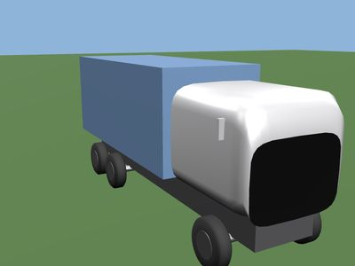
Truck
A rigid lorry: a cab with windscreen, a cargo box on a ladder frame, three axles (six wheels, the front ones steer) and mirrors.
npx -y godotwright model build truck -o truck.glb
Aircraft
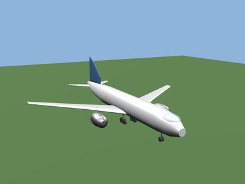
Airliner
A twin-engine passenger jet: round fuselage, swept tapered wings with dihedral, engines under the wings, tailplane, fin, cockpit glass and landing gear.
npx -y godotwright model build airliner -o airliner.glb
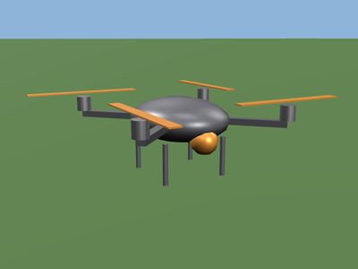
Drone
A quadcopter: a flat body with a camera gimbal, four arms in an X, a motor and a two-blade propeller on each arm, and short landing legs.
npx -y godotwright model build drone -o drone.glb
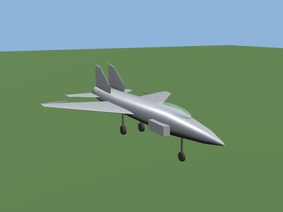
Fighter
A twin-fin jet fighter: a long blended fuselage with canopy and intake, swept trapezoid wings with ailerons, all-moving tailplanes, canted fins with a rudder, an engine nozzle and retractable tricycle landing gear.
npx -y godotwright model build fighter -o fighter.glb
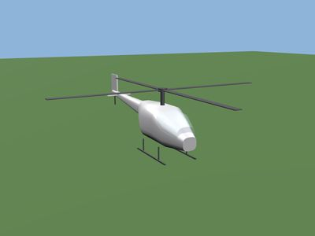
Helicopter
A light helicopter: cabin and tail boom, glass canopy, main rotor with blades that pitch about their root, a tail rotor, fin and skids.
npx -y godotwright model build helicopter -o helicopter.glb
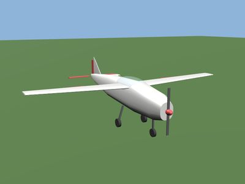
Light aircraft
A high-wing single-engine propeller aeroplane: tapered fuselage with cabin glass, straight wings with ailerons, tailplane with elevators, fin with rudder, a spinning propeller and fixed tricycle landing gear.
npx -y godotwright model build light-aircraft -o light-aircraft.glb
Boats and ships
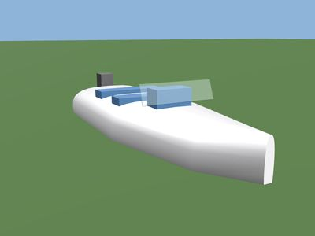
Boat
A small motorboat: a pointed hull floating on the waterline (y = 0), a windscreen and console, two bench seats and an outboard engine on the transom.
npx -y godotwright model build boat -o boat.glb
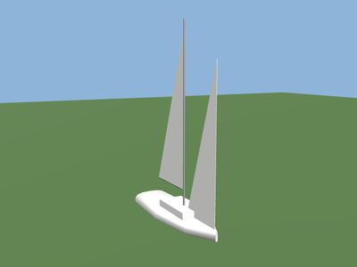
Sailboat
A small sailing yacht: a slim hull with cabin, a fin keel below the waterline, a tall mast, a mainsail on a boom that swings about the mast and a jib at the bow.
npx -y godotwright model build sailboat -o sailboat.glb
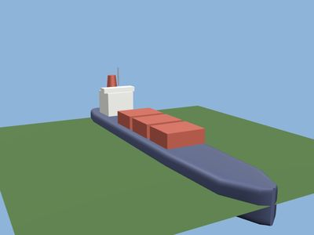
Ship
A cargo ship: a lofted hull with the waterline at y = 0, an aft superstructure with bridge, funnel and mast, container stacks on deck, a rudder and a propeller.
npx -y godotwright model build ship -o ship.glb
Machines
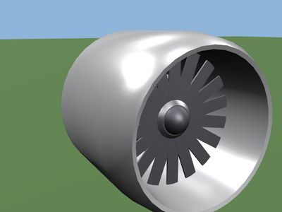
Jet engine
A turbofan engine: a nacelle with an intake lip, a fan with blades that spins about the engine axis, a core cowl and an exhaust nozzle.
npx -y godotwright model build jet-engine -o jet-engine.glb
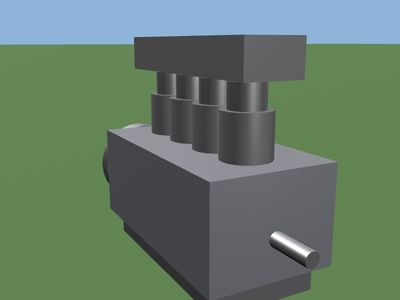
Piston engine
An inline piston engine: a crankcase block with an oil pan, a row of cylinders with a piston in each, a cylinder head and cover, a crankshaft along the length and a flywheel at the rear.
npx -y godotwright model build piston-engine -o piston-engine.glb
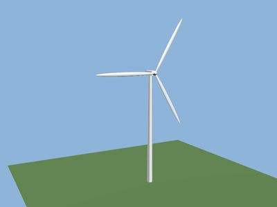
Wind turbine
A wind turbine: a tapered tower, a nacelle that yaws on top of it, and a three-blade rotor that spins about the horizontal axis.
npx -y godotwright model build wind-turbine -o wind-turbine.glb
Buildings
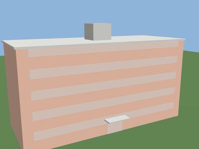
Apartment
A block of flats: a long rectangular block with a flat roof and parapet, a glazed band of windows on every floor, a glass entrance with a canopy on the +Z side and a stair core that rises above the roof.
npx -y godotwright model build apartment -o apartment.glb
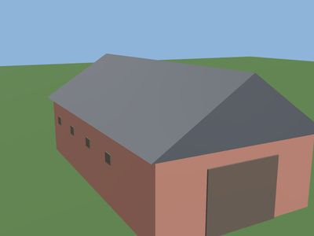
Barn
A farm barn: a long box with a gable roof, a big double door in the +Z gable end, a hayloft hatch above it and a row of small windows along both long sides.
npx -y godotwright model build barn -o barn.glb
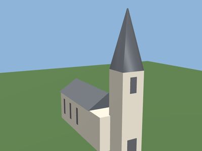
Church
A parish church: a long nave with a gable roof and tall side windows, a square belfry at the +Z end with a pyramid spire, and a doorway in the tower.
npx -y godotwright model build church -o church.glb
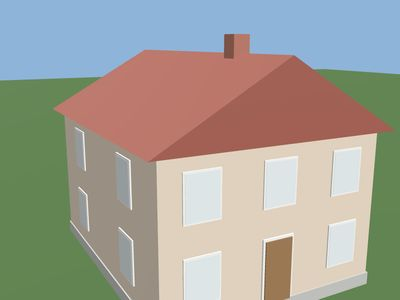
House
A house or small building: walls, roof, windows, a door and an optional chimney.
npx -y godotwright model build house -o house.glb
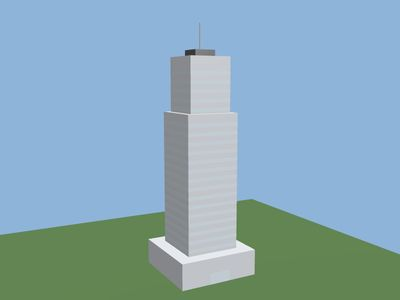
Tower
A high-rise office tower: a wide podium with a glass entrance on the +Z side, a tall shaft with a band of glass at every floor, a setback upper block and a crown with an antenna.
npx -y godotwright model build tower -o tower.glb
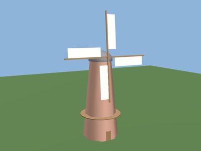
Windmill
A traditional Dutch tower mill: a tapering eight-sided brick tower with a gallery and a door, a domed cap that turns about the tower axis, and four sails on a slightly tilted axle that spin about their hub.
npx -y godotwright model build windmill -o windmill.glb
Roads, rails and bridges
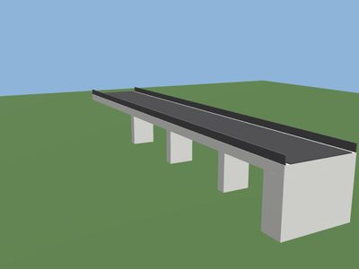
Bridge
A girder road bridge: a deck with a railing on each side, a row of piers under it and an abutment at each end.
npx -y godotwright model build bridge -o bridge.glb
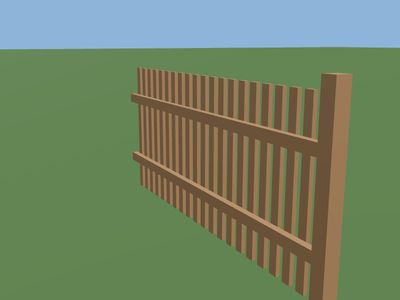
Fence
A section of wooden picket fence along z: a post at each end, two horizontal rails and evenly spaced pickets.
npx -y godotwright model build fence -o fence.glb
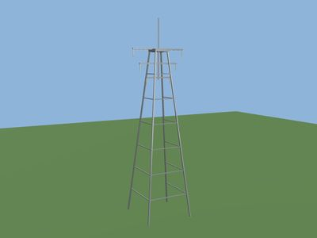
Power pylon
A lattice transmission pylon: four tapering legs braced by square frames at regular heights, three crossarms near the top with a hanging insulator at each end and a peak.
npx -y godotwright model build power-pylon -o power-pylon.glb
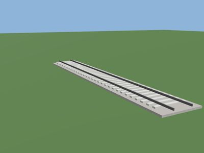
Railway track
A length of standard-gauge railway track along z: a ballast bed, concrete sleepers every 0.6 m and two rails with their heads 1.435 m apart.
npx -y godotwright model build railway-track -o railway-track.glb
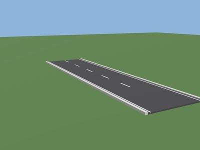
Road
A straight road segment along z: an asphalt surface, a dashed centre line, solid edge lines and a raised curb on each side.
npx -y godotwright model build road -o road.glb
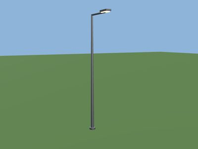
Street lamp
A street lamp: a tapering steel pole on a base plate, an arm that reaches out towards +Z over the road, a housing and an emissive lamp underneath it.
npx -y godotwright model build street-lamp -o street-lamp.glb
Plants
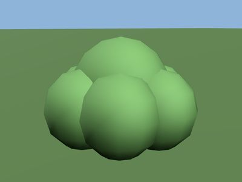
Bush
A shrub: a cluster of overlapping rounded leaf masses around a central one, on short woody stems, standing on y = 0.
npx -y godotwright model build bush -o bush.glb
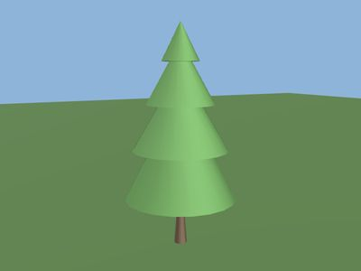
Conifer
A conifer: a slim trunk and a crown of five stacked tiers of needles.
npx -y godotwright model build conifer -o conifer.glb
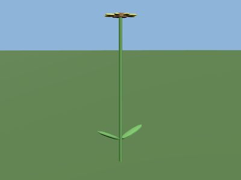
Flower
A flower: a slender stem, two leaves near the base and a head of petals around a centre disc, facing up.
npx -y godotwright model build flower -o flower.glb
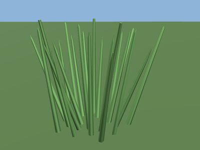
Grass
A tuft of grass: thin tapering blades in a ring, each leaning outwards by a different amount and with a different height so the tuft looks natural.
npx -y godotwright model build grass -o grass.glb
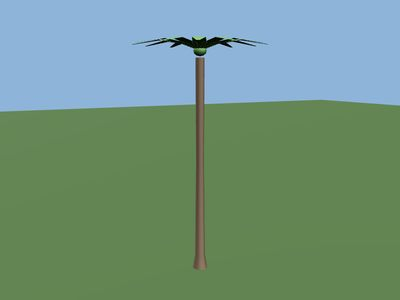
Palm
A palm tree: a slim ringed trunk that swells at the base, a crown knob at the top and a ring of long, arching fronds, each its own node with its pivot at the crown so it can sway.
npx -y godotwright model build palm -o palm.glb
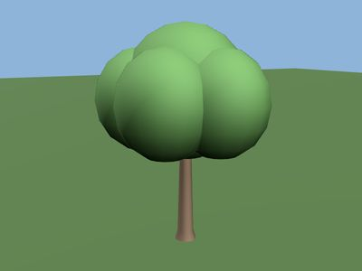
Tree
A broadleaf tree: a flared, tapering trunk, ringed branches and a crown of blobs of foliage.
npx -y godotwright model build tree -o tree.glb
Terrain and water
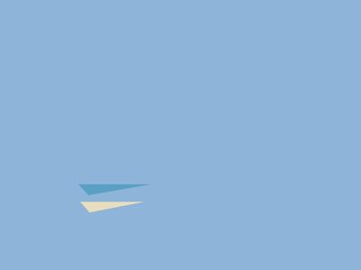
Sea
A sea: a flat, subdivided water plane at sea level (y = 0) for a wave shader, and a flat sea floor below it.
npx -y godotwright model build sea -o sea.glb
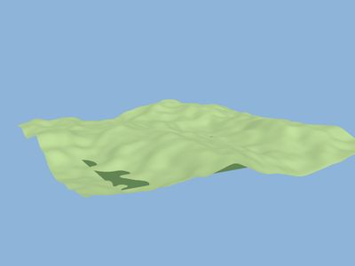
Terrain
A heightmap terrain tile: a grid of ground heights from seeded noise (plains, hills, mountains or an island), with smooth normals and an optional lake.
npx -y godotwright model build terrain -o terrain.glb
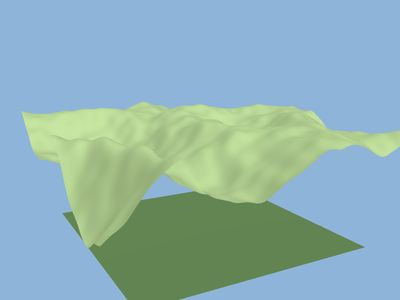
Mountains
The same terrain kind with ridged mountains. Neighbouring tiles continue each other exactly.
npx -y godotwright model build terrain --set relief=mountains --set maxHeight=90 -o mountains.glb
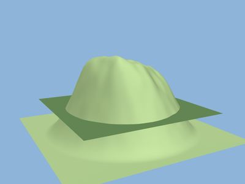
Island
One landmass with the sea floor around it.
npx -y godotwright model build terrain --set relief=island -o island.glb
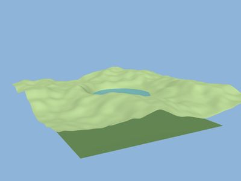
Lake
A lake carved into the ground, with the water level just under the lowest point of its shore.
npx -y godotwright model build terrain --set lakeRadius=45 --set lakeDepth=8 -o lake.glb
Props
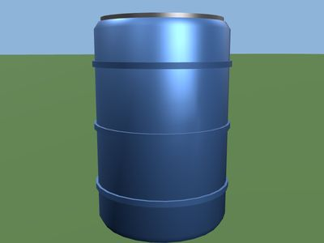
Barrel
A 55-gallon steel drum: a cylindrical body with rolling hoops, a separate lid disc on top and a rim, standing on y = 0.
npx -y godotwright model build barrel -o barrel.glb
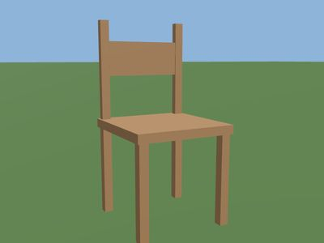
Chair
A wooden dining chair facing +Z: a square seat on four legs and a backrest with two uprights and a rail at the back (-Z side).
npx -y godotwright model build chair -o chair.glb
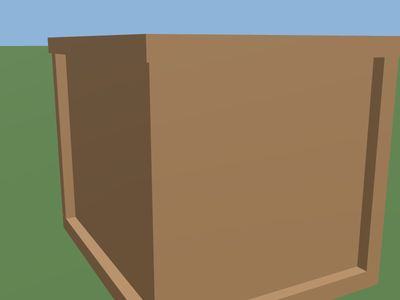
Crate
A wooden crate: a box of planks with a corner post at each vertical edge, a slightly overhanging lid and a base frame.
npx -y godotwright model build crate -o crate.glb
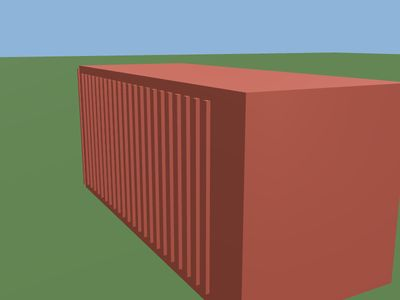
Shipping container
An ISO shipping container: 8 ft wide, 8 ft 6 in tall (9 ft 6 in high cube), corrugated sides and double doors on hinges at the rear (-z).
npx -y godotwright model build shipping-container -o shipping-container.glb
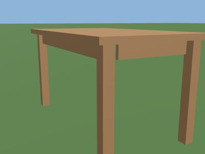
Table
A wooden table: a top, four legs and an apron frame under the top.
npx -y godotwright model build table -o table.glb
FAQ
Do I need Blender or Godot installed?
No. Models are built and checked by Godotwright itself. Godot only loads the result when you open the .glb in your project.
Can I change the models?
Yes. Every kind has parameters with ranges (godotwright model kinds lists them), and every recipe is a JSON spec you can copy and edit.
Can a cheap model like Haiku or a Flash model do this?
Yes, with limits. In a small test, six Haiku agents each built a recognisable model, but they worked blind; that is why model view and a check for loose parts exist. See the write-up.
How good are they?
They are clean, correctly scaled base models with the right parts and pivots, not sculpted art. The point is a solid start that an agent can refine, and models that load and animate in Godot without fixing.